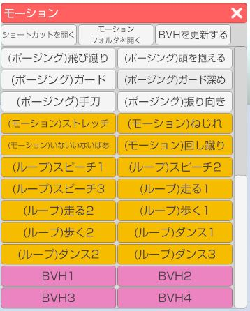
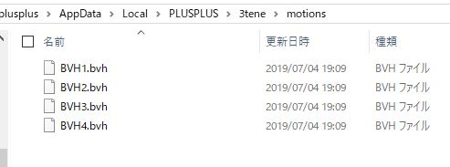
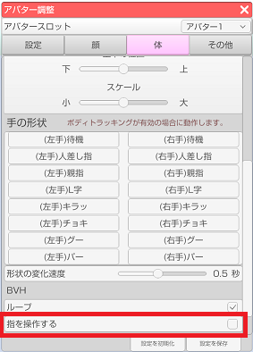
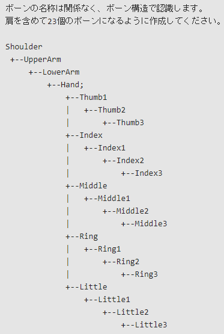

左側メニュー上から2番目の「モーション」アイコンをクリックするとモーションウインドウが開きます。
※Live2D のアバターを読み込んでいる場合には別のモーションウインドウが開きます。
ウインドウ内のモーションリストのボタンをクリックするとアバターが動きます。
白：デフォルトポーズ
黄色：デフォルトモーション
ピンク：読み込んだBVHモーション

ウインドウ上部の「ショートカットを開く」をクリックするとショートカット設定ウインドウが開きます。
※3ten右側メニュー上から5番目の「設定」アイコンからも開くことが出来ます。
ショートカットリストの中から該当のモーションにショートカットキーを設定することが出来ます。
下記の条件を満たしている必要があります。
・初期姿勢が T-Pose になっている。
・hips に移動値が代入してある。
・hips から子に向かってローカル回転を代入してある。
ウインドウ上部中央の「モーションフォルダを開く」をクリックするとフォルダが開きます。
このフォルダに読み込ませたいBVHファイルを配置します。

その後、ウインドウ上部右の「BVHを更新する」をクリックするとリストにBVHファイルが追加されます。
アバター調整ウインドウの「体」タブにある、BVH 項目の「指を操作する」にチェックを入れます。
※設定変更前に読み込んだ BVH には適用されません。

リストから選択した BVH モーションに対応した指ボーンがあれば指も動きます。
肩以降のボーン構成は下記のようになっている必要があります。
